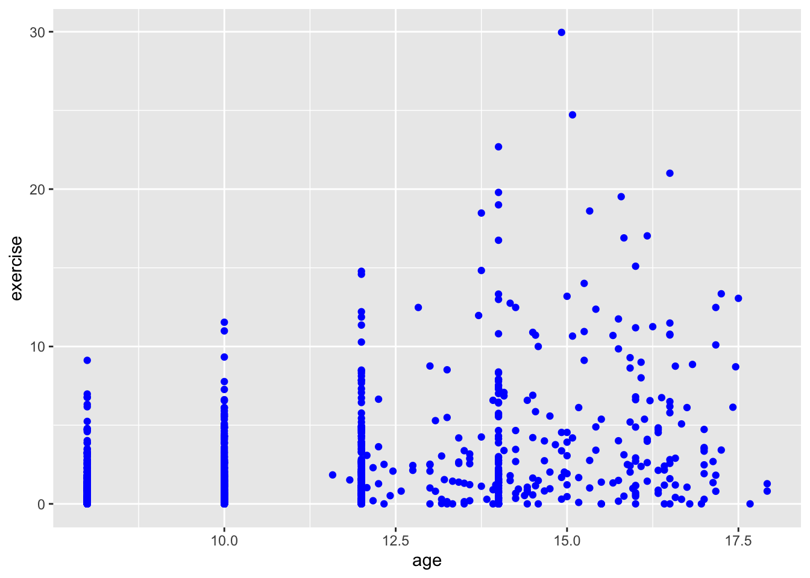
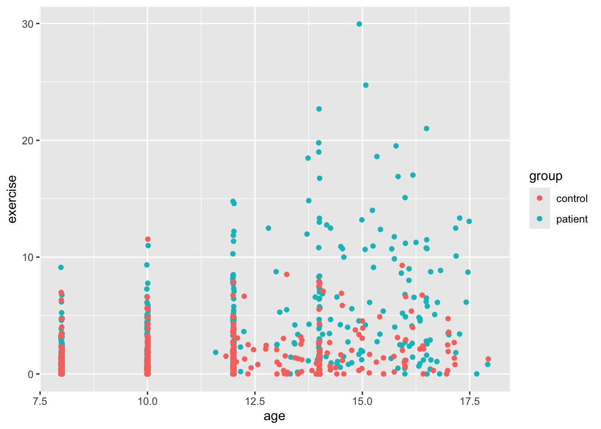
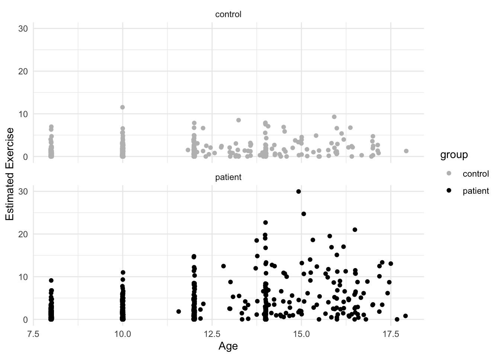
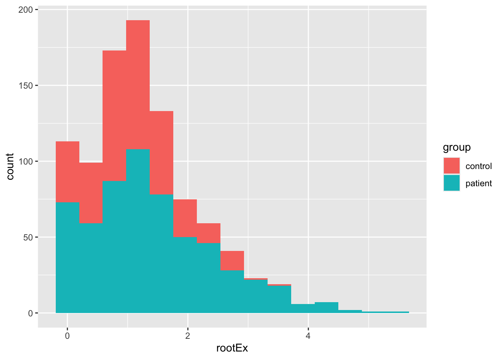
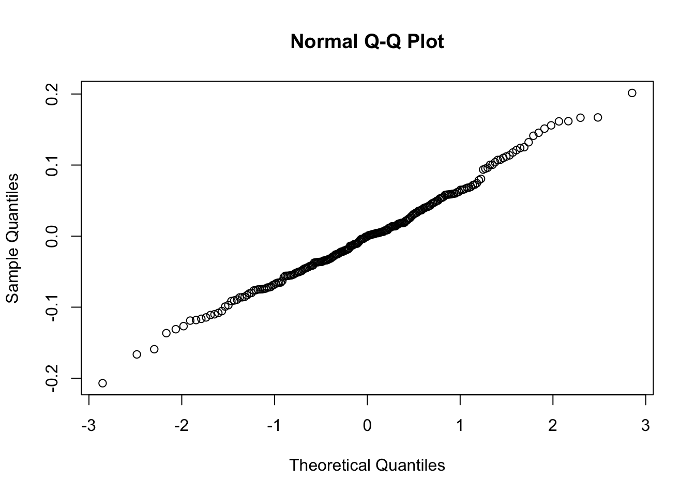
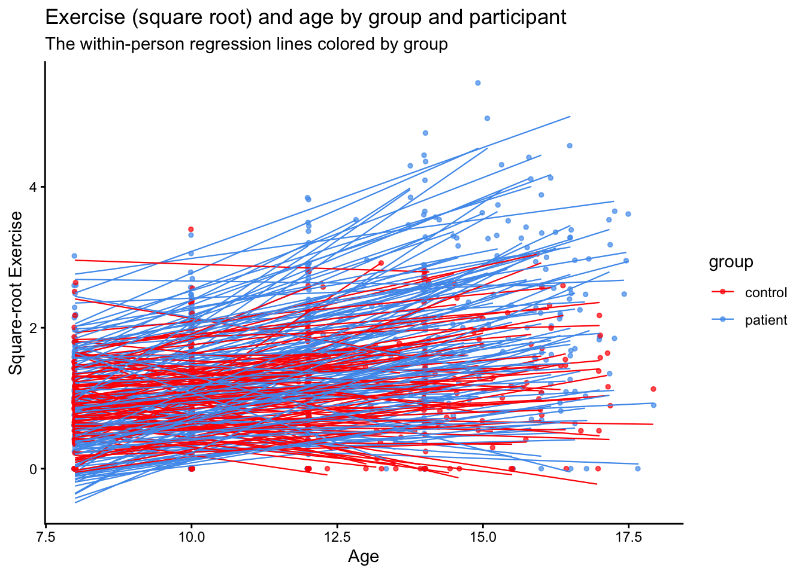

10 Longitudinal models with upper-level predictors
10.1 Overview
This week’s tutorial covers three topics:
- The intercepts-and-slopes as outcomes model in a longitudinal analysis
- Some more information on using
ggplot2 - Quick look at time-dependent covariates
Packages required
carlme4ggplot2
10.2 Part 1: Intercepts and Slopes as Outcomes
Davis, Blackmore, Katzman, and Fox (2005) study on the exercise histories of a patient group of 138 teenage girls hospitalized for eating disorders and of 93 comparable control subjects. At the time of data collection, the girls and their parents were interviewed, and based on the interviews, an estimate of the average number of hours per week of exercise was constructed at each subject’s current age, which varied from girl to girl, and in most cases at 2-year intervals in the past, starting at age 8. Thus, the response variable, exercise, was measured at several different ages for each girl, with most subjects measured four or five times and a few measured two or three times. We are interested in modeling change in exercise with age and particularly in examining the potential difference in typical exercise trajectories between patients and control subjects. The data for the study are in the data frame Blackmore (named after the researcher who collected the data) in the carData package:
Blackmore$agegroup <- with(Blackmore,
cut(age, quantile(age, c(0, 0.25, 0.5, 0.75, 1)),
include.lowest=TRUE))
# intercept is the end of the study (current time)
Blackmore$endcentered <- Blackmore$age - max(Blackmore$age)
# intercept is the average age for the group
Blackmore$midcentered <- Blackmore$age - mean(Blackmore$age)
xtabs(~ group + agegroup, data=Blackmore)## agegroup
## group [8,10] (10,12] (12,14] (14,17.9]
## control 185 60 58 56
## patient 275 118 83 11010.2.1 A short tutorial on ggplot2
Let’s try a different visualization to preview our level-2 results. This visualization is much like the one that we used for (cross-sectional) Model 4.
This uses the ggplot2 package
This package has become a standard with R users because it is very well documented and very flexible. However, it takes a bit of getting used to. This is a link to the package author (Hadley Wickham’s) book chapter on how it works.
A ggplot is built in steps. These can be executed one at a time or in steps. To illustrate, let’s build a plot in several steps. The key is that we can save the plot that we build first and then manipulate it. The way these plots are constructed is based on the grammar of graphics, and that’s what makes it a bit cumbersome, but after a while it becomes second nature (though of course, I look things up constantly in the help pages!).
The first thing we’re going to do is to create the basic plot area and tell ggplot where the data are. Then, we’re going to we’re going to add a layer of points and map those points to our data. We can’t do anything, of course, if we don’t attach the ggplot2 package… (note: the package is called ggplot2 but the main function is ggplot()).
library(ggplot2)
ggplot(Blackmore) + # tell ggplot where the data are
geom_point(mapping = aes(x = age, y = exercise)) 
The + sign is part of the package and separates layers and other options. It’s not uncommon to have several + as you add more options. In RStudio, type the + and then press return (or Enter) and the cursor will move the next line and indent. This helps organize the code so that each line contains one layer or option.
Next, let’s add some color. There are two ways we might use color. One is mundane, and that is to color all the points the same. Let’s do that first, and then let’s do something more interesting, let’s color points according to whether the girl was part of the control group or a “patient” in the Blackmore study. Also, this time, I’m not going to save the plot. You’ll note that when you run the code it will appear. The reason I’m not adding to the already saved plot is we’re modifying the options within one layer (the geom_point layer).
ggplot(Blackmore) +
geom_point(mapping = aes(x = age, y = exercise), color = "blue") # color all the points blue
ggplot(Blackmore) +
geom_point(mapping = aes(x = age, y = exercise, color = group)) # color according to group
OK, this is more helpful for data exploration. We can sort of see a trend, though the relationship is not exactly linear. It looks like the girls in the patient group were exercising more at the end of the study. It’s hard to see because the age variable only takes on certain values (is nearly discrete). To help us see all the points, we’ll add what is called jitter. This option adds a small bit of noise (a very small normally distributed number) to each point and sort of, well, jitters it.
ggplot(Blackmore) +
geom_point(mapping = aes(x = age, y = exercise, color = group), position = "jitter") # add jitter
So we see a bit better now, but there’s something a bit funny about our dataset besides the discrete age values. We can see this a bit better if we use ggplot to make a histogram for age and then add color to see whether there’s a difference between the two groups. By default, the geom_bar function in ggplot2 plots count data, so it makes a histogram, which isn’t always what we want, but here it is. As you’ll see below, exercise is positively skewed. This is why your level 1 models might have fit weirdly. We’ll deal with that a little later.

Back to our scatterplots, let’s do a bit of formatting before we move on to our analysis. There are many other plot layers we can add, for example using geom_smooth() we can add linear and nonparametric regression lines as in earlier vignettes. But since our data likely need some transformation, we’ll skip that. Most of the time, our variable label in our dataframe isn’t what we want on either axis. To change the axis labels, we use labs() as below. We’ll also change the colors of the dots with scale_color_manual(). Finally, we’ll add a pre-packaged theme for the plot theme_minimal(). This is just a small sample of all the things one can do with ggplot.
ggplot(Blackmore) +
geom_point(mapping = aes(x = age, y = exercise, color = group), position = "jitter") +
scale_color_manual(values = c("grey","black")) +
labs(x = "Age", y = "Estimated Exercise") +
theme_minimal() +
facet_wrap(~ group, 2)
10.3 Adding level 2 predictors
Let’s start with the model using age centered with \(0\) at the end of the study:
## Fixed Effects:
## coef.est coef.se
## (Intercept) 5.48 0.41
## endcentered 0.45 0.04
##
## Random Effects:
## Groups Name Std.Dev. Corr
## subject (Intercept) 5.48
## endcentered 0.51 1.00
## Residual 1.98
## ---
## number of obs: 945, groups: subject, 231
## AIC = 4452.5, DIC = 4426.2
## deviance = 4433.310.3.1 Transforming the Exercise Variable
Before we proceed, we need to do something about the exercise variable. It’s clearly numeric and not a count variable, so it can’t be handled in a generlized model format (not part of the course). A quick fix with positively skewed data is a square-root transformation. This often shrinks the range, though our data will likely not be symmetrical.
Blackmore$rootEx <- sqrt(Blackmore$exercise)
ggplot(Blackmore) +
geom_histogram(mapping = aes(x = rootEx, fill = group), bins = 15)
The result is probably good enough for us, but see Fox & Weisberg for the Box-Cox transform of this data. Importantly, let’s see how our model is affected. Here I’m going to run steps 1-3 just using endcentered age. Note, the convergence problems are “solved” using a different optimzation routine. The reason that convergence is failing is because many of the slopes in the control group are close to zero.
10.3.2 Steps 1 and 2:
mod1.2t <- lmer(rootEx ~ endcentered + (endcentered|subject), data = Blackmore, control = lmerControl(optimizer ="Nelder_Mead"))
sumary(mod1.2t)## Fixed Effects:
## coef.est coef.se
## (Intercept) 2.06 0.09
## endcentered 0.12 0.01
##
## Random Effects:
## Groups Name Std.Dev. Corr
## subject (Intercept) 1.21
## endcentered 0.11 0.91
## Residual 0.52
## ---
## number of obs: 945, groups: subject, 231
## AIC = 2050.6, DIC = 2014.7
## deviance = 2026.610.3.3 Step 3:
Here, instead of using the sumary command from the faraway package, I’ll use the full summary. Also, we’ll use the ordinary likelihood-ratio test from anova() knowing that it might be too liberal.
mod1.3t <- lmer(rootEx ~ endcentered + I(endcentered^2) + (endcentered|subject), data = Blackmore, control = lmerControl(optimizer ="Nelder_Mead"))
anova(mod1.2t, mod1.3t)## Data: Blackmore
## Models:
## mod1.2t: rootEx ~ endcentered + (endcentered | subject)
## mod1.3t: rootEx ~ endcentered + I(endcentered^2) + (endcentered | subject)
## npar AIC BIC logLik -2*log(L) Chisq Df Pr(>Chisq)
## mod1.2t 6 2038.6 2067.8 -1013.3 2026.6
## mod1.3t 7 2023.9 2057.9 -1005.0 2009.9 16.711 1 4.353e-05 ***
## ---
## Signif. codes: 0 '***' 0.001 '**' 0.01 '*' 0.05 '.' 0.1 ' ' 1## Linear mixed model fit by REML ['lmerMod']
## Formula: rootEx ~ endcentered + I(endcentered^2) + (endcentered | subject)
## Data: Blackmore
## Control: lmerControl(optimizer = "Nelder_Mead")
##
## REML criterion at convergence: 2032.1
##
## Scaled residuals:
## Min 1Q Median 3Q Max
## -2.8748 -0.5449 -0.0113 0.4837 4.1950
##
## Random effects:
## Groups Name Variance Std.Dev. Corr
## subject (Intercept) 1.51468 1.2307
## endcentered 0.01197 0.1094 0.91
## Residual 0.26089 0.5108
## Number of obs: 945, groups: subject, 231
##
## Fixed effects:
## Estimate Std. Error t value
## (Intercept) 2.385443 0.122250 19.513
## endcentered 0.246183 0.032218 7.641
## I(endcentered^2) 0.010211 0.002473 4.129
##
## Correlation of Fixed Effects:
## (Intr) endcnt
## endcentered 0.818
## I(ndcntr^2) 0.637 0.95310.4 Summary
Using the square-root transformation we arrive at the same conclusions as with un-transformed exercise, though deviance is lower, and the estimates of the intercept are a bit uninterpretable, more on that later. So we have that:
- The best fitting level 1 model is one with random intercepts and age slopes, and a fixed quadratic age term
- Slope variance is not very large, but still significantly different from zero (as per our deviance test)
- There are still some issues with a few level-1 residuals, namely that there are a few outlier observations.
Despite some of the issues with outliers, we’ll attempt to explain the intercept and slope variance using the group factor, which is the explanatory variable of interest.
10.5 Adding Level-2 Explanatory variables
We can have as many explanatory variables as we like (so far as our model is still identified) but with most datasets, you won’t have that many level-2 variables. Unlike cross-sectional MLMs, it isn’t necessary to create a level-2 aggregate predictor (e.g., like mean.ses) since it makes no sense to compute the average age for each girl. Thus, we can focus just on the group variable, which categorizes each girl as a patient or part of the control group.
Fitting this model is exactly the same as with cross-sectional, only now, we’re going to include a level-1 predictor that doesn’t vary: the quadratic age term. So, we want to make sure that our cross-level interaction only involves the linear age variable and group. Then we add in the quadratic effect before the random component. Also, since we were having convergence problems we’ll also continue to use the Nedler_Mead optimizer.
We’re also going to check assumptions of normal errors at both levels.
Level 1:
\[ Y_{ti} = \pi_{0i} + \pi_{1i}(a_{ti}-L) + \pi_{2i}(a_{ti}-L)^{2} e_{ij} \] Level 2:
\[ \pi_{0i} = \beta_{00} + \beta_{01}Group_{i} + r_{0i} \] \[ \pi_{1i} = \beta_{10} + \beta_{11}Group_{i} + r_{1i} \] \[ \pi_{2i} = \beta_{20} \]
Combined model:
\[ Y_{ti} = \beta_{00} + \beta_{01}Group_{i} + \beta_{10}(a_{ti}-L) + \beta_{11}(Group\times(a_{ti}-L)) + \beta_{20}(a_{ti}-L)^{2} + r_{0i} + r_{1i}(a_{ti}-L) + e_{ij} \]
mod2.1a <- lmer(rootEx ~ endcentered + group + endcentered:group + I(endcentered^2) + (endcentered|subject), data = Blackmore, control = lmerControl(optimizer ="Nelder_Mead"))
# Level 1 residuals
qqnorm(residuals(mod2.1a))

So as we see, the level-1 residuals are still not the best, but at level 2, we have what we need. With these caveats in mind, let’s now check out the results:
## Linear mixed model fit by REML ['lmerMod']
## Formula: rootEx ~ endcentered + group + endcentered:group + I(endcentered^2) +
## (endcentered | subject)
## Data: Blackmore
## Control: lmerControl(optimizer = "Nelder_Mead")
##
## REML criterion at convergence: 1997.2
##
## Scaled residuals:
## Min 1Q Median 3Q Max
## -2.9292 -0.5018 -0.0021 0.4899 4.1928
##
## Random effects:
## Groups Name Variance Std.Dev. Corr
## subject (Intercept) 1.230033 1.10907
## endcentered 0.008466 0.09201 0.89
## Residual 0.259621 0.50953
## Number of obs: 945, groups: subject, 231
##
## Fixed effects:
## Estimate Std. Error t value
## (Intercept) 1.623296 0.163399 9.935
## endcentered 0.149659 0.034294 4.364
## grouppatient 1.148317 0.179620 6.393
## I(endcentered^2) 0.008898 0.002449 3.634
## endcentered:grouppatient 0.127303 0.018451 6.900
##
## Correlation of Fixed Effects:
## (Intr) endcnt grpptn I(n^2)
## endcentered 0.782
## grouppatint -0.706 -0.345
## I(ndcntr^2) 0.502 0.905 -0.052
## endcntrd:gr -0.641 -0.396 0.885 -0.065Because we’ve taken the square-root (raised Y to the 1/2-power), but left the X’s untransformed, interpretation using the “change in Y for a unit change in X” is difficult.
This Cross-Validated answer gives the gist of how cumbersome actual interpretation can be, but it goes something like this:
The average within-subject slope is 0.15. This means that a unit change in age (1 year) yields \(2 \times 0.15 = 0.3\) times the square of the current level of exercise (in hours per week).
If we needed a more interpretable effect description, we could try another transformation, specifically, one that makes sense in the field or with respect to what we measured.
10.5.1 Visualizing the transformed data
Let’s make a new ggplot and see if the square root transform helps with data visualization. We’ll also add lines for each person to see if we can approximate the linear trend. Also, the values argument of scale_color_manual can take many different arguments including the names of colors as we have done above, and also Hex Color Codes as I have included below (c("#FEC601","#4F9CED")).
ggplot(data = Blackmore, aes(x = age, y = rootEx, col = group, group = subject)) +
geom_point(size = 1, alpha = .7, position = "jitter") +
theme_classic() +
scale_color_manual(values = c("red","#4F9CED")) +
geom_smooth(method = lm, se = F, linewidth = .4, alpha = .1) + # to add regression line
labs(x = "Age", y = "Square-root Exercise", title = "Exercise (square root) and age by group and participant", subtitle = "The within-person regression lines colored by group")
10.6 Time dependent covariates
As a final analysis, let’s examine a hypothetical effect of involvement in sports. These are simulated data added onto the exercise dataset.
We’ll add two variables: one hypothetical level-1 variable indicating if a girl played sports at that time and a level-2 variable indicating whether a girl ever played sports
I’ve done this at random, but we can see that we have most of our level 1 sports time points in the patient group.
## group
## sports1 control patient
## no sports 267 459
## sports 92 127As an illustration, I’ll fit two models:
- Using the level-1 sports variable: an indicator of whether the girl played a sport at the time of measurement (estimation) of exercise
- Using the level-2 sports variable: an indicator of whether the girl ever played sports during her lifetime
10.6.1 Level-1: Time-dependent sports predictor
## Fixed Effects:
## coef.est coef.se
## (Intercept) -0.07 0.10
## sports1sports -0.02 0.05
## age 0.12 0.01
##
## Random Effects:
## Groups Name Std.Dev. Corr
## subject (Intercept) 0.95
## age 0.11 -0.85
## Residual 0.52
## ---
## number of obs: 945, groups: subject, 231
## AIC = 2056.5, DIC = 2010.5
## deviance = 2026.510.6.2 Level-2: Participant-level indicator of sports participation
## Fixed Effects:
## coef.est coef.se
## (Intercept) -0.01 0.11
## sports2Sports -0.13 0.08
## age 0.12 0.01
##
## Random Effects:
## Groups Name Std.Dev. Corr
## subject (Intercept) 0.94
## age 0.11 -0.85
## Residual 0.52
## ---
## number of obs: 945, groups: subject, 231
## AIC = 2053.4, DIC = 2009
## deviance = 2024.2We can see that the coefficients are not the same. In the level-1 model, we have a (likely non-significant) difference in exercise at each time point that is small and favors those who didn’t play sports.
The level-2 sports variable, in contrast, gives us a test of the difference in intercepts (here the beginning of the study) between those who did and did not ever play sports. Note here, the difference is larger, but still likely not significant.